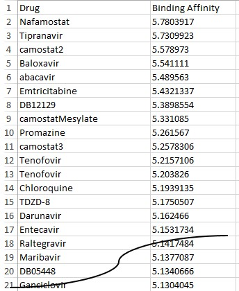

<!DOCTYPE HTML>
<html>
<head>
<meta http-equiv="Content-Type" content="text/html; charset=utf-8">
<title>Mednolia</title>
<script type="text/javascript">

  var _gaq = _gaq || [];
  _gaq.push(['_setAccount', 'UA-33863391-1']);
  _gaq.push(['_trackPageview']);

  (function() {
    var ga = document.createElement('script'); ga.type = 'text/javascript'; ga.async = true;
    ga.src = ('https:' == document.location.protocol ? 'https://ssl' : 'http://www') + '.google-analytics.com/ga.js';
    var s = document.getElementsByTagName('script')[0]; s.parentNode.insertBefore(ga, s);
  })();

</script>

</head>
<body>
 <p align=left ><a href="eVersion.html"><font color="FF0000"><h3>English Version</h3></font></a>
<table width="100%" height="40" border="0" cellspacing="0">
   	<tr>
<p ><h1 align="center"><B>Quantum Mechanical Calculation of Protease TMPRSS2</B></h1></p>
<pre><h2>

The protease TMPRSS2 can assist the new coronavirus COVID-19 to enter the host cell. If TMPRSS2 
is inhibited, the entire infection process can be inhibited, that is, the virus is killed.

The calculation results of quantum mechanics tell us that pocket2 is an active pocket, with two 
active atoms CD2 and CE2 in residue Tyr72.

Then enter the active pocket pocket2, active atoms CD2 and CE2 and 51 small molecule drugs into 
the 3D-CNN program to obtain the binding affinity.

The drug Nafamostat, its affinity is close to 5.8, far greater than all other drugs. Therefore, 
Nafamostat is the best drug to inhibit TMPRSS2.
    
	

This result is consistent with the work of the Institute of Medical Science, University of Tokyo, Japan 
(https://www.u-tokyo.ac.jp/focus/en/articles/z0508_00083.html). It's just that they are obtained
through experiments, and we are only obtained through quantum mechanical calculations.
</h2>
</pre></td></tr>
</table> 
</body>
</html>